Welcome to MoneyWorks
Welcome to MoneyWorks, the integrated Accounting system for small
(and not so small) business. MoneyWorks is designed to:
Keep a record of all your business transactions: Using the
enquiry and reporting
facilities, this will give you better control of your business than is
possible with a manual system;
Keep track of your GST and/or Sales Tax commitments: Every time a
transaction is entered into MoneyWorks these are automatically accounted
for. This is much more cost efficient and accurate than using manual
methods;
Be easy to use: You don’t have to be a computer guru or
accountant to use MoneyWorks. It operates in a simple and intuitive
fashion, and provides all the power and functionality that a small
business could require.
Using MoneyWorks you will:
Spend less time administering your accounts and more on making
your business work;
Have better information to help manage your business;
Reduce your accountant’s fees—instead of providing them with your
cheque books and bank statements, you can just print a few reports from
MoneyWorks (or provide a complete set of your accounts
electronically).
It’s a big manual...
We’ve taken a lot of trouble to provide you with a comprehensive and
easy-to- read manual. But that doesn’t mean that we expect you to read
it all—in fact we would be surprised if anyone has read through it,
fascinating as it is! Use the manual to help you get started, and as a
reference tool.
Getting started
To get started on MoneyWorks, follow these simple steps:
Download and install the MoneyWorks software on
your hard disk. This is explained later in this chapter, so read
on.
If you are a first time user, work through the
Tutorial—this will give you a good grounding in how to use
MoneyWorks (that’s what it’s for). The tutorial is supplied as separate
documentation, and can be accessed from the Help menu in
MoneyWorks.
Create your own set of accounts as explained in
Getting Started. You may wish to use
one of the sets that comes with MoneyWorks as a starting point.
Using This Guide
The MoneyWorks User Guide is divided into chapters that correspond to
the main functional areas of MoneyWorks, for example Debtors, Cash
Transactions, Entry Windows. To find information on a specific topic,
use the Index or the Table of Contents.
New features and changes made for MoneyWorks 9 are highlighted in the
same manner as this paragraph.
Note: The first sections of this manual covers
aspects that are common to all MoneyWorks products (MoneyWorks Cashbook,
Express, Gold/Datacentre). Subsequent sections cover the additional
features of MoneyWorks Gold (although Express users may need to refer to
the sections on Analysis Reports, Forms Design and
Importing/Exporting).
Conventions used in this
Guide
Cross reference links are generally of the form “Privileges &
Multi-user”. Clicking on the link will take you to the
section.
Button names, field names and command names are shown with each word
italicised, as in “click the Info button”.
Instructions which involve the use of a menu are given as “Choose
Edit>Copy”, where Copy is a command which is under the Edit menu. For
hierarchical menus the instructions are given in the form “Choose
File>New>New Report”, where “New Report” is a hierarchical menu in
“New item of the “File” menu.
In examples, text that you type is shown inside double quotation
marks (“like this”). Don’t type the quotation marks.
Differences
within the MoneyWorks product range
Not all parts of this manual are applicable to all members of the
MoneyWorks product range. In
this situation, this is clearly indicated, e.g.
Not Cashbook—indicates the feature is not available
for MoneyWorks Cashbook (but will be for Express and Gold);
Gold Only—indicates the feature is only available in
MoneyWorks Gold/ Datacentre.
Differences in
Operation under MacOS and Windows
MoneyWorks operates on both macOS and Windows (see System
Requirements for supported versions). In this manual
platform-specific issues are always indicated by the name of the
platform (e.g. “Windows Only” or “Mac Only”).
Keyboard shortcuts for menus and buttons are invoked slightly
differently for both
platforms. The convention used in this manual is to show the Windows
keystroke first then the Mac keystroke, for example “press Ctrl-K/⌘-K”.
In this case K is the key that you press to invoke the command while
holding down the Ctrl key if you were using Windows, or while holding
down the Command key if you are using a Mac. Macintosh users should be
careful not to confuse the use of “Ctrl” here with the control
key on their keyboards.
Some of the interface elements also differ across platforms. In
particular on Windows you can tab into controls such as radio buttons
(and with recent OS releases, you can now do the same on the Mac).
There are two “enter” keys on most Windows keyboards, one on the main
part of the keyboard (this is called the “return” key on the Macintosh),
and the other on the numeric keypad. In transaction entry on MoneyWorks
these two keys have different functions. Where it is necessary to
differentiate them we have referred to them as “↩︎/return”, meaning the
enter key on the main part of the keyboard, and “keypad enter”, meaning
the enter key on the numeric keypad. If you have a Windows notebook with
only one enter key, you should reconfigure your keyboard for MoneyWorks
in the MoneyWorks Preferences — see Keys.
Newer MacBook Pros lack an Enter key—use Function-Return instead.
UK Mac Users: You might be struggling to find the
option key on your keyboard.
For inscrutable reasons, Apple have labelled it alt on UK
keyboards (and possibly on European ones as well).
If You have Problems
We have taken great care to make the software and manual as easy to
use as possible. However it may be that in operating MoneyWorks you
require additional help. There are several sources available.
On-Line Help
The complete manual is available as searchable on-line help by
right-clicking on an object and choosing Help, or by choosing
Help on This from the Help menu. Windows users can also press
F1. Note that, as this is on-line help, an internet connection is
required.
This manual is also available as a pdf by choosing PDF
Manual in the Help menu1. Note that the
manual is not installed by default, but will offer to install the first
time you use it. On Windows you need to have Adobe Acrobat Reader or
some other PDF reader installed.
Windows: If you are in doubt as to the purpose
of a particular button, command or field hold the mouse over the object
and a brief description will be displayed in the bottom of the
MoneyWorks application window. More on-line help is available by
pressing F1.
Macintosh: If you are in doubt as to the purpose
of a particular button, hold down the command key and hover the mouse
over the object—after a few seconds a tool tip will be displayed with
information about the item. More on-line help is available by
right-clicking and choosing Help.
Telephone and email support: MoneyWorks Users can
get support via email or phone, details of which are available under
Help>Get Support. As we believe that you should only pay for the
support you use, we don't offer an annual support contract (or include
support in the purchase or subscription price), but will charge for
support given. Registered MoneyWorks users can get expedited support by
lodging a credit card (under File>Manage Services) and receiving a
Support ID and PIN number.
To expedite service, you should have MoneyWorks running on your
computer when you make the call, and give your Support ID and PIN (and
PO Number if required). You should state the product you are using
(MoneyWorks Cashbook, Express or Gold), the platform (Windows or
Macintosh), and give an outline of the problem you are having. You may
be asked for the version being used (available in the About MoneyWorks
menu item in the Help menu on Windows, or the MoneyWorks menu on
Mac).
It is also a good idea to start TeamViewer (available under
Help>Use TeamViewer Quicksupport) before you call.
This allows our support team to come online and see your computer
screen, so you can show them the issue.
Consulting Help
There are a number of MoneyWorks consultants who can help if you have
problems. The cost varies from consultant to consultant. A list is
available at http://www.cognito.co.nz/support/people.php.
Installing MoneyWorks
When you purchase MoneyWorks you will be sent an email with your
serial number on it and a download link. If you need to reinstall later,
you can request a new installer from http://www.cognito.co.nz/download.php
— once installed, the downloaded copy will activate when you enter your
serial number. Make sure you request the correct version, as a
MoneyWorks 8 serial number will not activate a MoneyWorks Gold 9, and
nor will a MoneyWorks Cashbook serial activate a Gold.
Installation is platform dependent, and requires at least 30MB of
free disk space.
After installation it is important not to move MoneyWorks from the
installed location, as the Internet Software Update system requires the
application to be just where the installer puts it.
Windows Installation
The MoneyWorks installer will create a folder called MoneyWorks
Gold ( or MoneyWorks Express or MoneyWorks
Cashbook, depending on your product) onto your computer, with the
program and support files in it. By default this will be in the
C:\Program Files directory.
Double-click the downloaded Install MoneyWorks
xxx.exe file (where xxx is Gold,
Express, or Cashbook, depending on the product you are
installing).
The MoneyWorks install window will open.
Follow the instructions
on the screen
When installation is completed, a shortcut is installed in the
Start>Programs menu, allowing easy access to MoneyWorks from the
Start menu.
Macintosh Installation
MoneyWorks will be installed in the /Applications
folder.
Double
click the downloaded MoneyWorks Installer package and follow the steps
displayed on your screen
When installation is completed, you can start MoneyWorks from your
Applications folder.
The First Time you Run
MoneyWorks
The first time you start MoneyWorks you will be prompted for your
name and serial number.
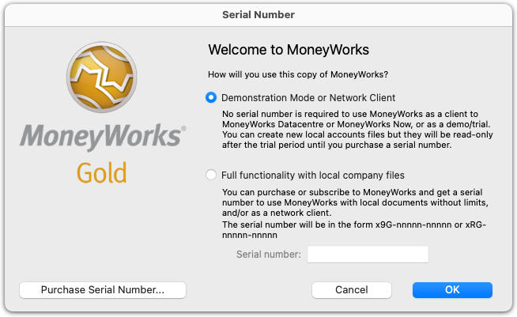
You only need to enter a serial number if
you have purchased or subscribed to MoneyWorks. If you are trialling
MoneyWorks, or using MoneyWorks Gold only as a client for MoneyWorks
Datacentre or MoneyWorks Now, you do not need to enter anything.
Note:
When using MoneyWorks as a demo or trial, any new MoneyWorks file that
you create will be usable for 45 days or 99 opens (whichever comes
first), after which time you will need a full version to access it. The
sample Acme file (used for the tutorial) can be used indefinitely,
allowing you to thoroughly explore MoneyWorks.
When entering your serial number it note that it is in the form the
form XXX- nnnnn-nnnnn, and must be entered exactly as provided. If you
are copying and pasting it, make sure you aren't inadvertently copying a
trailing space character. The OK button is only enabled if
there are exactly 15 characters in the serial number field.
Registering your copy of MoneyWorks
If you have purchased a full version of MoneyWorks it is important
that you register it—you will in fact be prompted to do this. If you
don’t register your copy of MoneyWorks, and lose your serial number (and
you will be surprised how often this happens), you will need to purchase
another2.
When you register on-line, you can also provide your accountant’s
details. A special MoneyWorks licence will be made available to them so
they can support you better should the need arise. Accountant’s versions
are only available for registered users.
Registration involves giving us your contact details so we can keep
you informed of new developments in MoneyWorks, training courses and so
forth. Registering on-line is quick and easy.
If it is not convenient to register at this point, you can do it
later by choosing
Register on line from the Help menu.
Note: If you change your address, email, phone
number or other details, you can re-register MoneyWorks by choosing
Register on line from the Help menu.
MoneyWorks Updates
From time to time updates to your MoneyWorks program will be made
available. It is important that you are using an up-to-date version, and
when you install MoneyWorks you will be prompted to check.
Note: If you are a client to a MoneyWorks Datacentre
Server, you will be updated automatically from the Datacentre Server
itself. It is important that you don't update separately because, in
general, the Datacentre Server and the Gold client must be using the
same version.
You can set MoneyWorks to automatically check for, download and
install these updates. To do this:
The software updates window will be displayed.
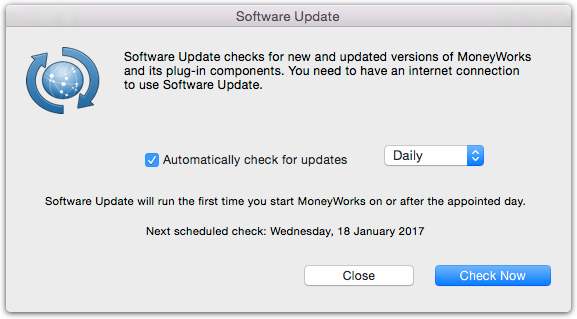
Click Check Now
MoneyWorks will check the Cognito web site for any updates, and list
any that are found:
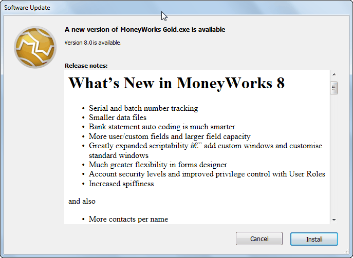
To see a brief summary of
what is in the update, click on it—the summary will appear in the
Details section at the bottom of the window.
The installer will be downloaded and run. On Mac, you will be asked
to enter your Mac login password so that the installer can do its thing.
On windows, click through the installer's wizard pages to complete the
install.
Automatically Check for
Updates
To have MoneyWorks automatically prompt you to check for updates, set
the Automatically Check for Updates option, and the frequency
(daily, or weekly) that you would like to check.
Note: Checking for software updates requires an
internet connection.
Getting Started
Note:
Firewall settings or proxy servers may block MoneyWorks from checking
for updates. If MoneyWorks consistently reports that it cannot contact
the Update server, you should check with your IT support person.
Note: If you have recently connected to a Datacentre
server, you will get a warning if you attempt a software update.
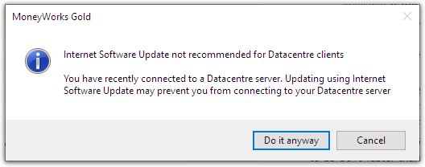
Datacentre users should
generally not do manual Software Updates—Instead the Datacentre server
will provide updates when you log in.
1 The manual is not
automatically installed, but will be downloaded the first time you use
it.↩︎
2 If you register, we
can tell you what your serial number is in the event that it is lost. If
you don’t register, we won’t know what it is.↩︎
Getting Started
This chapter covers how to set up MoneyWorks, and, at fourteen pages
of riveting prose, is somewhat longer than we would really like. Don’t
be fooled by this: setting up is not necessarily difficult. We’ve tried
to cover every contingency and possibility, and for the more
accounting-inclined, talk about the underlying philosophy as well. If
you are just the average punter (especially if you are a Cashbook user),
you can probably ignore most of this.
But nor do we want to lull you into a false sense of security. It is
important to get the setup as correct as possible. Mistakes made here
can come back to haunt you later—get the starting bank balance wrong for
example, and your bank reconciliations will be a little tricky1.
Of course if you are starting a new company the setup is much easier:
there is no “baggage” that needs to be recorded; no historic balances or
outstanding transactions. However most people are not in that
situation.
So before you start, it is important that you are well organised. In
particular, you need to have the correct information available. For
Cashbook users this is normally just a bank statement or two; for others
you ought to also have the details of any outstanding transactions
(these are explained a bit later on).
Tip: If you are new to MoneyWorks and haven’t done
so already, work through the Tutorial before you attempt to set up. That
way you will be able to find your way about in MoneyWorks, create
transactions and so forth. Consider this more of an edict than a
tip.
Tip: If you are setting up your file based on an
existing MoneyWorks one, use the Save a Clone as
command.
Quick Start
If you are using MoneyWorks Cashbook, or are in a hurry, here’s an
outline of what you need to do, and where in the manual you’ll find how
to do it:
Create a new file
This is just a common or garden file that sits on your computer and
which stores all the information that you have entered into MoneyWorks.
You should give it a sensible name, and make sure it is in a sensible
location (because you will want to back it up every so often!). Creating
a file is discussed in the aptly named Creating Your New File.
Set your financial/fiscal
year
You need to tell Moneyworks when your financial/fiscal year
starts—this is normally your tax year (although for personal accounts
you might prefer a calendar year). It is important to get this right as
it cannot be changed easily later. This is discussed in Periods.
Optionally choose your
chart of accounts
A chart of accounts is just a coding structure for allocating your
income, expenses etc. MoneyWorks comes with a number of account templates from which you can choose, or you can create your own. If you choose one of the
pre-supplied templates, you can of course modify it later.
Enter your opening bank
balances
These are taken off your bank statement(s), and can be entered as
part of the setup process (see Bank
Balances).
Enter outstanding
historic transactions
If you are using Express or Gold, you should really enter any
historic transactions that are still outstanding (and this is where
things can start to get a bit tricky). By “outstanding” we mean invoices
that are not yet paid, and cheques that have been issued but not yet
presented (see Accounting for Unpresented Items
and Entering Opening Payables &
Receivables). It is better to enter these at the outset,
otherwise they will suddenly appear on your bank statement in the
future, and you won’t know what they are for.
Enter your opening stock
If you are running an inventory system, you will need to enter your opening stock on hand.
Enter your opening balance
sheet
If you want a complete set of accounts (and most businesses do,
because
it is a legal requirement, and (b) you need to know this stuff if
you are to run a successful business), you should also enter in the
current balances for your existing chart of accounts (the faint hearted
can defer this and leave it to their accountant to do later if they
want). This is covered in Entering your
Balance Sheet.
Check the Tax Table
The tax rates you use might be different from the ones that we
supply. See
Check Your Tax Rates
And that’s basically all there is to it. It’s not hard, but because
this is the probably the first time you have done it, it is not
necessarily easy either. Just be careful and be methodical, and if it
all gets too much, you can always get a MoneyWorks consultant or your
accountant to give you a hand.
To start MoneyWorks successfully you will require the following:
A start date: The Start Date is the date
from which you will be entering all information into MoneyWorks. It is
convenient (but not necessary) if this is the start of a financial year,
so that you can use the financial statements that your accountant has
prepared as a starting point. If you are setting up MoneyWorks shortly
after the start of a financial year you might set the start date as the
beginning of the year and back-enter transactions.
You don't need to have a full balance sheet available to start
MoneyWorks. You can start with the cash book and/or payables and
receivables, and enter in the balance sheet at a later time if you
wish.
Bank balance: You will need to have the opening
balance as at the Start Date for each bank account. These are
taken directly off the bank statements.
In addition, you will need to create a list of all unpresented items
(i.e. cheques and deposits that you have made before the start date but
which appear on the bank statement after the start date). As these
transactions straddle the start date, they need to be specially
handled.
Outstanding
payables, receivables: You will need to list all invoices that
you have sent out or received that have not been paid as at the start
date. Like the unpresented cheques, these straddle the start date, and
hence need to be handled differently.
Inventory: If you are intending to run a stock
control system you will need to do a stock take so that the correct
stock values are available. You will also need to have the cost price of
the items available so that MoneyWorks can correctly calculate your
margins and cost of goods.
Chart of Accounts: You will also need a chart of
accounts. This is basically a set of codes against which you can
categorise income, expenditure and other transactions. MoneyWorks comes
with several account templates that you can use, or you or your
accountant may already have one.
Before you start have a clear idea of what you want to achieve. Work
out a suitable chart of accounts, and keep it as simple as possible. Ask
your accountant if necessary. Systematically collect the required
information in a form suitable for entering into the computer.
Setup Definitions
For clarity, the following definitions will be used in this
chapter.
Start Date: The first day of operation of your
accounting system.
Close-Off Date: The day immediately prior to the
Start Date. This is the last day of use of whatever other
accounting system you used, and the balances from this will need to be
transferred into your MoneyWorks document.
Start Period: The period (month) in which you want
to start entering information. The Start Date will be the first
day of this period.
Setup Period: The period (month) immediately prior
to the Start Period. The Close-Off Date will be the
last day of this period. This period will only contain transactions that
establish your opening balance. The balances at the end of the Setup
Period (the closing balances) will be the same as those at the
beginning of the Start Period (the opening balances).
Creating Your New File
The information about your company, its transactions, balances,
budgets etc. are all held in a single document or file. Although in
principle you can put this file anywhere on your hard drive, we
recommend that you keep it somewhere that is easy to backup (the My
Documents folder in Windows for example).
To create a new document:
MoneyWorks will start and the MoneyWorks Welcome window will be
displayed (depending on your version, it may differ from the one
below).
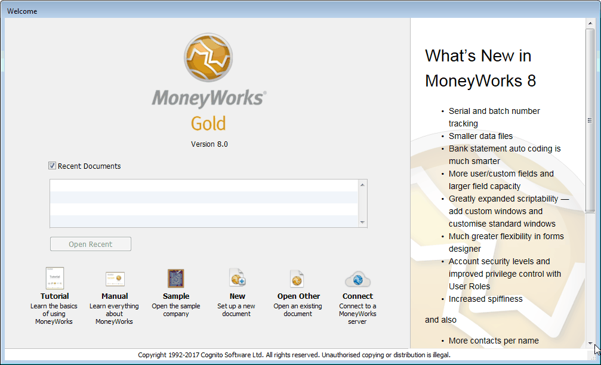
This lists recently opened MoneyWorks files, giving you easy access
to all your account files. If you have done the Tutorial, you will see
the Acme file listed (if you haven’t, we strongly recommend that you
click the Sample button and do it now). The Open
buttons are used to open an existing document.
The standard File Creation dialog box is displayed. You use this to
indicate where you want the file placed on your hard drive, and what to
call it. If you are not familiar with how this operates, see your
Windows or Macintosh User Guide.
Type
the name of the new document into the File Creation dialog, and select
where you want it stored on the disk
Your “Documents” folder (or a folder inside it) is a good place. You
should not place your document in the same folder as the MoneyWorks
application—instead keep it somewhere where it will be easy to
backup.
The document will be created in the indicated location and with the
given name. This may take a second or two.
The MoneyWorks setup screen will be displayed.
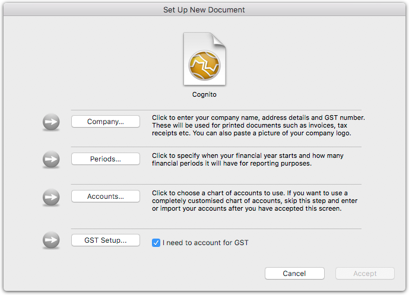
There is certain key information that is required before you can
start using MoneyWorks. The Set Up New Document window enables
you to enter this quickly and easily by simply clicking on each button
(in any order). Each part is ticked as you complete it.
This is the name and contact details of yourself or your company.
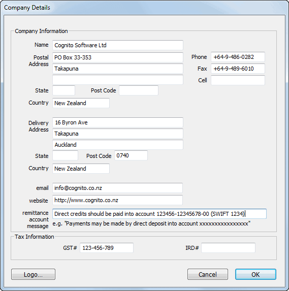
Enter the information into the appropriate fields in the window. Do
not worry if not all the information is to hand, as you can change it
later.
Note: The Tax Information varies from country to
country; this is where you record your GST, ABN, IRS, PST, VAT, Sales
Tax numbers.
The Logo
button is used to paste in your company logo.
Periods
MoneyWorks needs to know about your accounting (financial/fiscal)
year, which varies from country to country (e.g. for most Australian
businesses, it runs from 1st July to 30th June; in New Zealand it is
usually from 1st April to 31st March).
The year is broken into periods. You normally have 12 periods in your
financial year, each one corresponding to a calendar month. However
MoneyWorks lets you have anywhere from two to fifteen periods.
Note: If you are unsure of the details of your
financial year, please talk to your accountant. It is essential to get
this information correct at the outset—it cannot be altered after the
setup.
To enter details of your financial year and periods
Click the Periods button
The Financial Year window will open
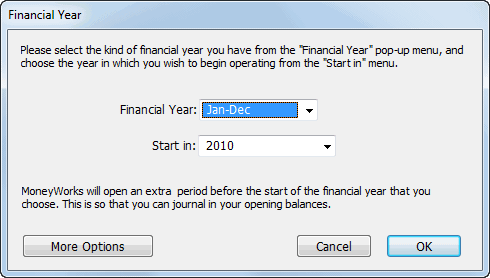
Choose
the start-end month range for your financial year from the
Financial Year pop-up menu
The first period in the nominated financial year will be your
Start Period. MoneyWorks will also open an additional period
one month prior to this, which is your Setup Period.
Note: You can only open new periods into the future,
not backwards. If you are entering historic data make sure your first
open period is sufficiently old to take the earliest transactions.
MoneyWorks will create a 12 month financial year starting in the
nominated period. The Start Period and the Setup
Period are made available for transaction entry. If the start
period is near the current date, then MoneyWorks will open periods up to
the current date for you as well. Otherwise you can open subsequent
periods when you are ready using the Open/Close Period command.
Note, it is generally best NOT to open periods in advance of the
current date.
If you are starting your accounts partway through a financial year,
that’s OK—you can just open the periods up to your start period once the
setup is finished —see Opening a New
Period. If you require a more complex structure (e.g. a 13
period year), click the More Options button (Gold only).
More Complex Financial Year
In Gold only, if you want a financial year with a different structure
from normal, click More Options in the Financial Year window to
display the following:
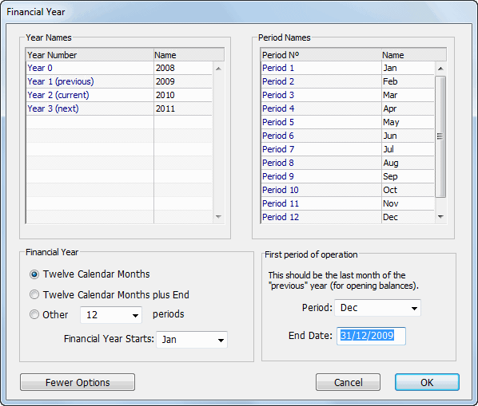
In this window you can specify the number of periods you want in your
financial year, the names of the periods (and year), and the setup
period.
Twelve Calendar Months: Each calendar month is
equivalent to one accounting period. This is the default setting.
Twelve Calendar Months plus End: An additional
period is provided for end of year adjustments. This period ends on the
same day as the 12th period in the financial year.
Other: Use the pop-up menu to specify the number of
periods in your financial year. You can have any number from two to
fifteen.
Financial year starts: Choose the first period of
the financial year. This automatically relabels the period names for
you.
First Period of operation: Choose the first period
of operation (the Setup Period) for your accounts—this can be
different to the start of your financial year.
End date: Specify the end date of your Setup
Period.
Period Names: If you want to have period names
different from those supplied, click on any period name in the period
names list. You will then be able to overtype the period name provided.
Pressing tab will move you through the list. Period 1 is the
first period of your financial year.
Year Names: MoneyWorks has taken a guess at the year
names you will want. If you want to change these click on a year name in
the Year Names list—you will then be able to overtype the name. Pressing
tab will move you through the list. Remember that at this point, the
current year is the year of your setup period.
If you want to return to the simple financial year setup, click
Fewer Options—the guff you have entered here will be
discarded.
Chart of Accounts
MoneyWorks comes pre-supplied with several charts of accounts that
are suitable for different types of organisations. You can use one of
these, or set up your own coding system. If you select one of the
standard charts you will be able to fine tune it to your own
requirements by adding and deleting account codes.
To choose your chart of accounts:
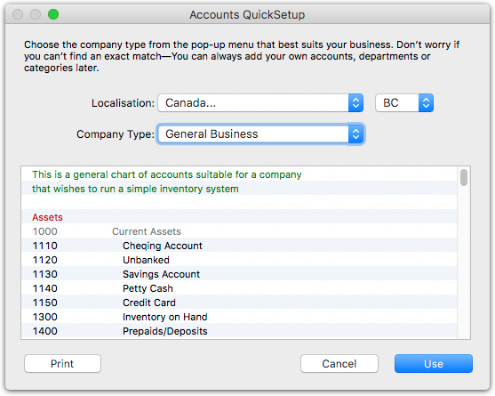
The Localisation pop-up allows you to create a file which uses the
location settings (including tax names) for a different country than
your own. Some locations have different tax rates for different
states/provinces. A separate “sub- locale” pop-up menu is provided for
such locations for which MoneyWorks has separate tax tables.
If
necessary, set the Localisation pop-up for the file’s target
country
The accounts for various types of organisation may be viewed by using
the Company Type pop-up menu. The Minimal set, as shown in the
diagram, should be used if you want to set up your own accounts from
scratch—it consists of only the accounts that MoneyWorks requires.
The accounts QuickSetup window will close.
 You can click the Accounts
button again to change your choice if required. Note however that you
cannot change the chart of accounts in this manner once you click the
Accept button in the Setup New Document window (although you
can make changes to the accounts you chose).
You can click the Accounts
button again to change your choice if required. Note however that you
cannot change the chart of accounts in this manner once you click the
Accept button in the Setup New Document window (although you
can make changes to the accounts you chose).
Accounting for GST, VAT or
Sales Tax
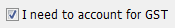
If you are not registered for GST, VAT, PST or
Sales Tax2, you will not want to have
MoneyWorks keep track of GST for you. You should therefore turn off the
option I need to account for GST.
If this option is off:
Turn off this option if you are not registered for GST
You can turn the option on later if required in the Document
Preferences —see
GST/VAT/Tax.
Note that even if this option is turned off, MoneyWorks will still
create two GST control accounts. You cannot delete these accounts, and
should not use them.
If you do account for
GST/VAT/Sales Tax
If, as is most common, you need to account for GST, you need to set
up your GST details in Moneyworks. If you don’t know some of the
details, you can set this up or change it later —see GST/VAT/Tax.
Set the options as appropriate for your GST basis, specifically:
If your GST is done on a payments or cash basis, set the
Payments Basis option; if it is done on an invoice or accrual
basis, set the Invoice Basis option;
Set the GST Cycle to the frequency with which you make your
GST/BAS return to the government;
Set the Next cycle ends on date to your Close-Off
Date. This is because it is advisable to run a special GST report
once the setup has been completed to mark the setup transactions as
having been processed for GST.
Note: Any general ledger accounts with a "*" tax
code are considered to be outside the tax system, and cannot have tax
applied to them. Do not use this tax code for day to day accounts, such
as sales, inventory or fixed assets.
For a discussion on GST, —see GST, VAT, Sales Tax & Tax
Codes.
Accepting Your Setup
After specifying your
company details, period structure, and selecting a chart of accounts,
you can move onto the next phase of the setup. The Accept
button will only be enabled if you set your financial year in step two
of the setup. When a step is completed, it will be ticked.
To confirm your setup:
The window will close, and a new window will be displayed into which
you can enter your bank balances.
Once you have clicked the Accept button you will not be able
to change the structure of your financial year, or choose a different
set of accounts (you can of course modify the chart you have
selected).
The Setup Account
The pre-supplied charts of accounts have a special account with an
account code of SETUP. This account is intended to be used in setting up
your opening balances.
The setup account will receive:
opening receivable (debtor) and payable (creditor)
balances;
opening bank balances, and adjustments for unpresented
items;
opening stock;
opening GST adjustment.
The balance of these will be journalled out when the opening balance
sheet is entered. Once the setup is complete, the SETUP account can be
deleted (for information on how to delete an account —see Deleting an Account.
There is only one setup account supplied with the standard accounts.
If your setup looks to be complicated, you might consider creating
additional ones for each of receivables, payables, stock and GST (you
can do this by simply duplicating the existing SETUP one, and call them
SETUPR, SETUPP and SETUPS). The pre-supplied SETUP account is required
by MoneyWorks for the automatic
entry of the bank balances.
Bank Balances
A fundamental reason for running an accounting system is to look
after your money. To do this accurately, the accounting system needs to
know how much money is in each of your bank accounts. The Bank Balances
screen, which is displayed when you click the Accept button,
lets you enter this information.
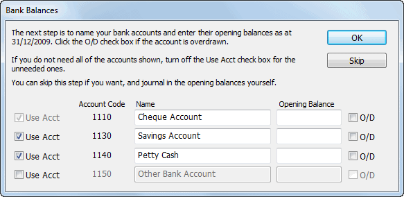
The Bank Balances screen displays a list of all the bank accounts in
your chosen chart of accounts. Some of these may not be relevant to you
(for example, you may only have one bank account), and you may also want
to change the names of the accounts.
If you don’t want to set up your bank accounts at this point, click
the Skip button—the MoneyWorks navigator will open and no
opening bank balance journal transaction will be created. You will need
to manually set up your bank accounts and their balances —see Manually Entered Bank Balances.
Removing a bank account
To remove a bank account that you do not require:
1.
Uncheck the Use Acct check box beside the appropriate
account
You can turn on the check box again if required. Note you must have
at least one bank account, so you cannot uncheck the first check
box.
Changing an account’s name
To change the name of a bank account:
1. Type the new name into the appropriate Name
field
Specifying opening balances
If you have a complete balance sheet (which includes the bank
balances) available at setup time, you will not want to enter any
opening balances at this point. Rather you will
journal in your complete balance sheet —see General Ledger Journals3.
If however you just want to get started, and (possibly) enter in the
balance sheet at a later point, you can enter the opening balance for
each bank account. If you do this MoneyWorks will automatically create a
journal to establish the bank balance(s).
To enter the opening bank balance:
1.
Type the balance as at the end of the Close-Off Date (taken from your
bank statement) into the appropriate Opening Balance field. If the
account is overdrawn, set the O/D check box
The journal that is created will be dated with the Close-off
Date and will be in the Setup Period (or in your initial
period if you used the More Options period button). It will be
posted and will not appear on your bank reconciliations. The balancing
account for the journal will be the SETUP account.
To confirm the bank details:
The Bank Balances window will close and the MoneyWorks Navigator will
be displayed.
MoneyWorks will change the account names, delete any unwanted bank
accounts, and (if appropriate) generate an opening journal so that your
bank accounts are set up with the correct balances.
Clicking the Skip button will discard any entries you have
made in the Bank Balances window and the Navigator will be
displayed.
This completes the first stage of the setup. You can now start using
MoneyWorks as a cashbook and a payables and receivables ledger. If you
want to take your accounts through to full balance sheet, you will need
to enter the opening balances (this can be done at a subsequent
time).
You may also want to add or delete accounts at this stage —see Creating a new Account.
Manually Entered Bank
Balances
If you clicked the Skip button in the Bank Balances entry
window, you will need to manually set up your bank accounts. To do this
you should:
Create any additional bank accounts that you may need —see Bank Settings,
or delete ones that are surplus to your requirements —see Deleting an
Account.
Manually journal in your opening bank balances taken from your
bank statement. To do this you need to create a journal —see General Ledger Journals and debit the bank
accounts with their opening balances and credit a balancing account
(probably just the setup or suspense account, but check with your
accountant). If a bank account is overdrawn, it should be
credited.
Do a special bank reconciliation —see Bank Reconciliation. This reconciles
all the historic transactions that make up the opening balance, and
hence will have a zero opening balance and a closing balance of whatever
the actual bank balance was.